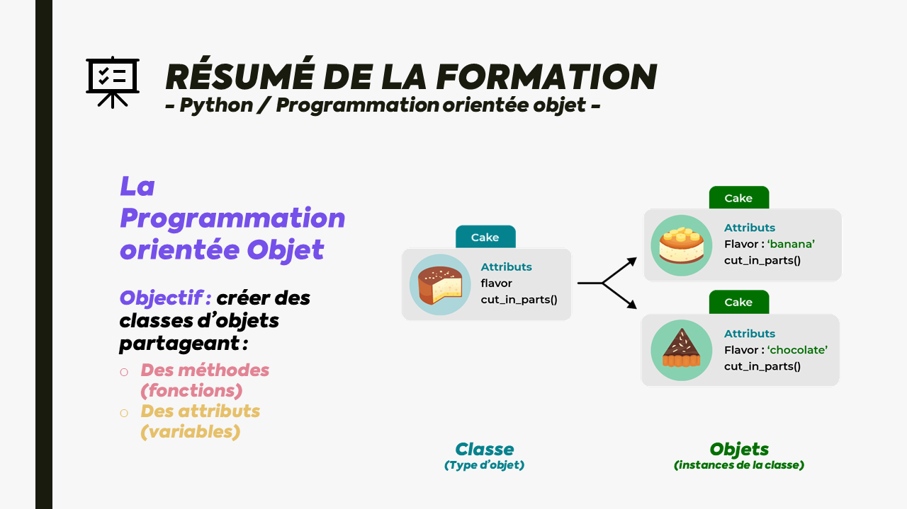

[MON] Programation orientée objet - Python
- MON
- 2022-2023
- temps 1
- Python
- POO
- Killian ROYANT
MON - La programation orientée objet sur Python
Déroulé de mon MON
Afin de réaliser ce module d'autoformation, j'ai commencé à suivre une formation de 12h (difficulté Moyenne) sur OpenClassrooms intitulée Apprenez la programmation orientée objet avec Python.
La formation est très claire et très simple à suivre, comme la plupart des formations proposées par Openclassrooms. Le formateur propose différents exemples repris tout au long de la formation. La formation est composée de vidéos, de cours écrits, d'exemples et d'exercices à chaque étape. À la fin de chaque chapitre, un quiz est proposé afin d'évaluer notre compréhension des différents acquis du chapitre.

Ressources
Ci-dessous les ressources principales liées à ce MON. Vous y retrouverez le lien vers la formation ainsi qu'un diaporama personnel où j'introduis et résume ce que j'ai appris grâce à cette formation.
Ressources :

Objectifs pédagogiques
À l’issue de ce cours, vous serez capable de :
- Écrire des méthodes et des classes avec Python.
- Utiliser le comportement hérité dans un programme Python.
- Structurer votre code dans un programme Python.
Prérequis
Prérequis :
Des connaissances de base en Python, que vous pouvez acquérir avec le cours suivant :
Outils nécessaires
Outils nécessaires :
Visual Studio Code ou Pycharm, que vous pouvez configurer avec les cours suivants :
- Mettez en place votre environnement front-end avec Visual Studio Code
- Mettez en place votre environnement Python avec PyCharm
Table des matières
Partie 1 - Écrivez des méthodes et des classes avec Python
- Tirez le maximum de ce cours
- Comprenez la programmation orientée objet
- Écrivez une classe Python
- Créez et utilisez des objets Python Quiz : Écrire des méthodes et des classes avec Python
Partie 2 - Utilisez le comportement hérité dans un programme Python
- Appliquez l’héritage dans votre code Python
- Écrivez une sous-classe en Python
- Surchargez les méthodes en Python
- Utilisez les hiérarchies d’héritage et l’héritage multiple
- Utilisez des objets dans des collections Quiz : Utiliser le comportement hérité dans un programme Python
Partie 3 - Structurez votre code dans un programme Python
- Utilisez les modules et les classes pour découper votre code
- Décomposez un problème de programmation orientée objet
- Gérez les exceptions Quiz : Structurer votre code dans un programme Python
Partie 4 - Récapitulons
- Revenez sur vos acquis